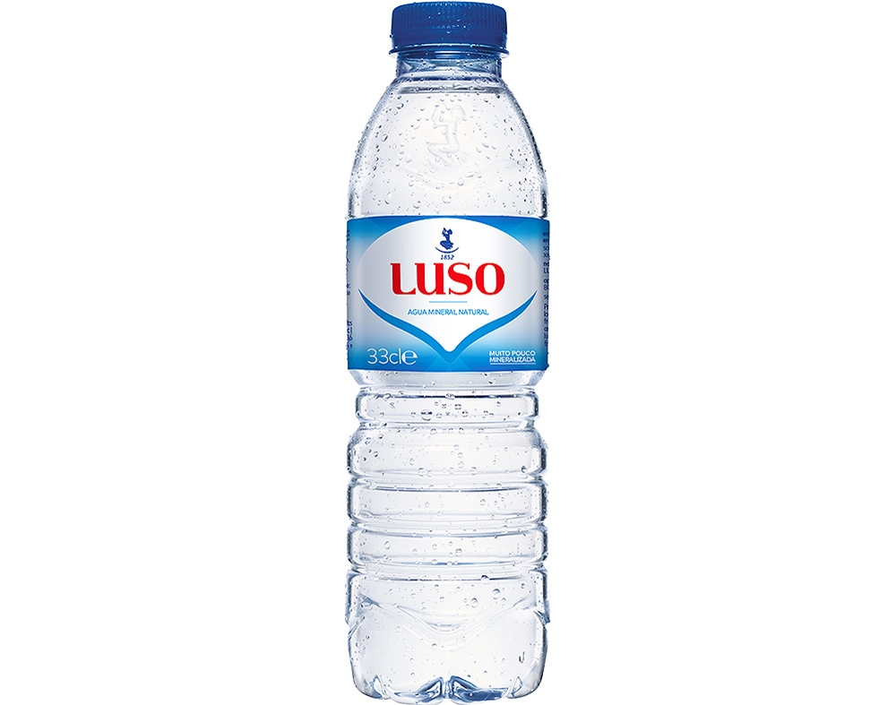

Água

O SlideShare utiliza cookies para otimizar a funcionalidade e o desempenho do site, assim como para apresentar publicidade mais relevante aos nossos usuários. Se você continuar a navegar o site, você aceita o uso de cookies. Leia nosso Contrato do Usuário e nossa Política de Privacidade .
O SlideShare utiliza cookies para otimizar a funcionalidade e o desempenho do site, assim como para apresentar publicidade mais relevante aos nossos usuários. Se você continuar a utilizar o site, você aceita o uso de cookies. Leia nossa Política de Privacidade e nosso Contrato do Usuário para obter mais detalhes.
Scribd will begin operating the SlideShare business on December 1, 2020 A partir desta data, a Scribd passará a gerenciar sua conta do SlideShare e qualquer conteúdo que você possa ter na plataforma. Além disso, serão aplicados os Termos gerais de uso e a Política de Privacidade da Scribd. Se prefira sair da plataforma, por favor, encerre sua conta do SlideShare. Saiba mais .
SlideShare Explorar Pesquisar Você Carregar Entrar Cadastre-se Início Conheça mais O slideshow foi denunciado. Utilizamos seu perfil e dados de atividades no LinkedIn para personalizar e exibir anúncios mais relevantes. Altere suas preferências de anúncios quando desejar. Água Próximos SlideShares Carregando em… 5 × 1 1 de 14 Gostou da apresentação? Compartilhe-a! Compartilhar E-mail Água - Lista de exercícios - 6º ano by NAPNE 65482 views Ciências - Atividade by NAPNE 539 views Livro projeto telaris capitulo 12 c... by Renan Silva 5641 views 5. teste diagnóstico importância... by Susana Ferrão 13658 views III.1 Água no ambiente e nos seres ... by Rebeca Vale 14866 views 3º+aula+p.. by Bruno Nogueira 1078 views Compartilhe o SlideShare Facebook Twitter LinkedIn Código de incorporação Tamanho (px) Inicie em Mostre SlideShares relacionados no final Código do WordPress LinkÁgua
1.571 visualizaçõesCompartilhar Gostei Baixar ...
NAPNE
SeguirPublicada em 25 de set de 2014
Autor: Profª Clarissa Sousa
... Publicada em: Educação 1 comentário 2 gostaram Estatísticas Notas Full Name Comment goes here. 12 hours ago Delete Reply Block Are you sure you want to Yes No Your message goes here Luísa Carvalho Verifique a fonte ⇒ www.boaaluna.club ⇐. Este site me ajudou escrever uma monografia. Há 3 meses Responder Tem certeza que deseja Sim Não Insira sua mensagem aqui HenriqueNovelo Há 3 anos Rejanice Há 5 anos Sem downloads Visualizações Visualizações totais 1.571 No SlideShare 0 A partir de incorporações 0 Número de incorporações 492 Ações Compartilhamentos 0 Downloads 6 Comentários 1 Gostaram 2 Incorporações 0 Nenhuma incorporação Nenhuma nota no slideÁgua
1. Água 2. Vamos falar sobre a água! Mas antes...do que é formada a água? ÊÊÊ!!! A água é uma molécula formada por átomos! Quer dizer, todas as moléculas são formadas por átomos! O que é uma molécula, o que é um átomo??? 3. Todas as coisas são constituídas por partes menores, que não conseguimos enxergar: a mesa, o corpo humano, a água... Tudo é formado por pequenas partes denominadas átomos. Vocês já devem ter ouvido falar em: oxigênio, hidrogênio, nitrogênio, carbono... Todos esses elementos são átomos que estão presentes na natureza. Quando esses átomos se juntam, eles formam moléculas. E essas moléculas juntas formam a mesa, o corpo humano...mas e a água?! 4. A água é uma molécula: formada por 1 átomo de oxigênio e 2 átomos de hidrogênio. Daí o nome: H2O (agá-dois-ó) Na verdade, essa é a fórmula química da água, normalmente representada assim: Quando as moléculas de água se juntam, ficam assim: H O H 5. Propriedades da Água •Fluidez :A água é fluida capacidade de se adequar a qualquer forma é o que torna impossível apertar a água 6. •Volume: a água ocupa um espaço uma forma de medir a quantidade de água a água está sempre em 3D Propriedades da Água 7. •Tensão superficial: a água tende a ficar “juntinha” as moléculas da água se atraem mas as moléculas da superfície são atraídas pelas moléculas debaixo e do lado. Não tem moléculas em cima. Propriedades da Água 8. Tensão superficial 9. •Solubilidade: água é o solvente universal a água é capaz de dissolver substâncias e gases Propriedades da Água 10. Substâncias solúveis Substâncias insolúveis •Solubilidade: água é o solvente universal a água é capaz de dissolver substâncias e gases algumas substâncias se dissolvem na água -solúveis outras não -insolúveis Propriedades da Água 11. A água pura é difícil de ser encontrada na natureza. O que é água potável? O que é água destilada? O que é água mineral? Água que se pode beber, não deve ter cheiro, cor ou odor. Deve ser livre de impurezas e parasitas. Possui menos substâncias do que a água potável. Está bem próxima da água pura. Água obtida em fontes que tem diversos minerais dissolvidos nela. 12. A água nos seres vivos A água: solvente universal Possui a capacidade de dissover diversas substâncias. Nosso sangue tem água com várias substâncias dissolvidas, como açúcar (glicose), sais minerais. Nossa urina também é formado por muita água, que ajuda a tirar as substâncias que precisamos mandar embora do nosso organismo. 13. Em temperatura ambiente, a água fica líquida, isto é, no estado líquido. Abaixo de 0ºC, a água vira gelo, isto é, fica no estado sólido. Acima de 100ºC, a água vira vapor, isto é, fica no estado gasoso. Estados Físicos da Água As moléculas estão ligadas com pouca força e deslizam umas sobre as outras. As moléculas estão organizadas e ligadas com muita força. As moléculas estão separadas umas das outras, ficando desordenadas. 14. Mudanças de estado da água Recomendadas Água - Lista de exercícios - 6º ano NAPNE Ciências - Atividade NAPNE Livro projeto telaris capitulo 12 ciencias 6º ano Renan Silva 5. teste diagnóstico importância da água para os seres vivos (2) Susana Ferrão III.1 Água no ambiente e nos seres vivos Rebeca Vale 3º+aula+p.. Bruno Nogueira Geografia - Paisagens NAPNE English Español Português Français Deutsch Sobre nós Desenvolvedores e API Blog Termos Privacidade Direitos Autorais Suporte×
Compartilhar painel de recortes
× Facebook Twitter LinkedIn LinkPainéis de recortes públicos que contêm este slide
× Nenhum painel de recortes público que contém este slideSelecionar outro painel de recortes
×Parece que você já adicionou este slide ao painel
Criar painel de recortesVocê recortou seu primeiro slide!
Recortar slides é uma maneira fácil de colecionar slides importantes para acessar mais tarde. Agora, personalize o nome do seu painel de recortes.